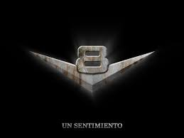
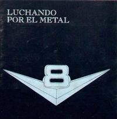

V8
V8 fue una pionera banda argentina de heavy metal de la década de 1980, fundada en 1979 por Ricardo Iorio y Ricardo Moreno, considerada en la actualidad como una banda legendaria, y es una de las agrupaciones más emblemáticas e influyentes del heavy metal argentino.

Integrantes: Ricardo Iorio Osvaldo Civile Gustavo Rowek Alberto Zamarbide

Discografía
La banda cuenta con 3 albumes:
Luchando por el metal (1983)
- Destrucción
- Parcas Sangrientas
- Si puedes vencer al temor
- Ángeles de las tinieblas
- Tiempos metálicos
- Muy cansado estoy
- Brigadas metálicas
- Torturador
- Hiena de metal
Un paso mas en la batalla (1985)
- Deseando destruir y matar
- Siervos del mal
- La mano maldita
- Cautivos del sistema
- Lanzado al mundo de hoy
- Ideando la fuga
- Camino al sepulcro
- Momento de luchar
El fin de los inicuos (1986)
- La gran ramera
- Ciega ambición
- No enloqueceré
- El vivo sustento del inquisidor
- Antes que los viejos reyes
- Salmo N° 58 (según "No destruyas" de David)
- El fin de los inicuos
- Trágico siglo
- Reina Ciega
